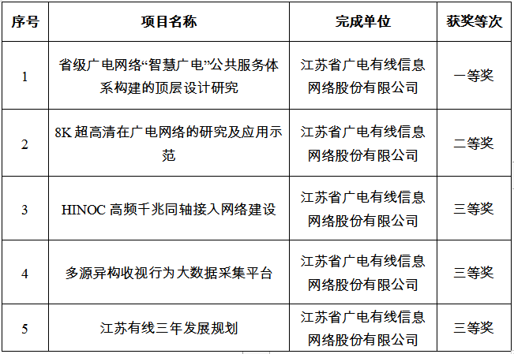

江苏有线5个项目获得“王选新闻科学技术奖”

近日，中国新闻技术工作者联合会公布了2021年“王选新闻科学技术奖”项目奖获奖名单。江苏有线根据申报要点，精心遴选优质项目、认真准备申报材料、积极筹备终评答辩，最终取得了1项一等奖、1项二等奖、3项三等奖的好成绩，5个申报项目均成功获奖，获奖项目数量与质量在地方新闻传媒单位中居于领先水平。

一等奖获奖项目《省级广电网络“智慧广电”公共服务体系构建的顶层设计研究》，项目主要针对前期“自下而上”发展模式下，各地“智慧广电”公共服务体系建设发展存在的顶层设计缺失、技术体系混杂、信息资源割裂等积弊，以江苏为研究对象，对构建省域“智慧广电”公共服务体系的整体架构及其方法论进行了探索与提炼。
二等奖获奖项目《8K超高清在广电网络的研究及应用示范》，项目基于江苏有线现有网络环境及网络演进趋势，国内首创提出基于DVB信道绑定的8K超高清端到端传输解决方案，并采用DVB信道绑定、IP组播及IP单播三种方式，国内率先实现8K超高清在广电网络的端到端传输。
三等奖获奖项目《HINOC高频千兆同轴接入网络建设》，项目在江苏试点区域建设全国首个千兆同轴接入HINOC试验网，开展部分高带宽、低延时业务应用示范，HINOC技术为广电同轴网络升级改造提供了一条性价比更高的可选之路。
三等奖获奖项目《多源异构收视行为大数据采集平台》，项目设计和开发了一套多源异构收视大数据采集系统，可对结构化数据、半结构化数据以及非结构化数据进行采集，具备一键部署各种预设采集处理组件的功能，提供可视化的采集流程设计环境，并可对采集流程进行实时的监控管理，解决了多个播控平台异构收视数据采集问题。
三等奖获奖项目《江苏有线三年发展规划》，项目是国内省级广电网络运营商第一次具有全局性、针对性、实操性的发展研究规划，以“宏观找方向，微观找问题，重点找办法”的核心理念，详细调研公司发展现状，认真研究竞争环境，合理规划未来发展，涵盖技术、网络、终端、业务、投资、资本运作等诸多方面。
“王选新闻科学技术奖”是为传承老一辈科学家的科学精神，激励我国新闻技术工作者奋发向上，更好地服务于我国的新闻与文化事业，经国家科学技术奖励工作办公室批准的我国新闻传媒行业最高层次的国家级科技奖项，是我国新闻界唯一跨媒体的科技奖项。
申报项目的成功获奖，是江苏有线持续实施科技创新战略取得的显著成果。后续，江苏有线将结合自身实际、发挥自身优势，继续深入开展各项关键核心技术研究，打造更多更优的科技创新成果，持续为提升广播电视和网络视听传播力、影响力、公信力、引导力，促进广播电视高质量创新性发展贡献力量。